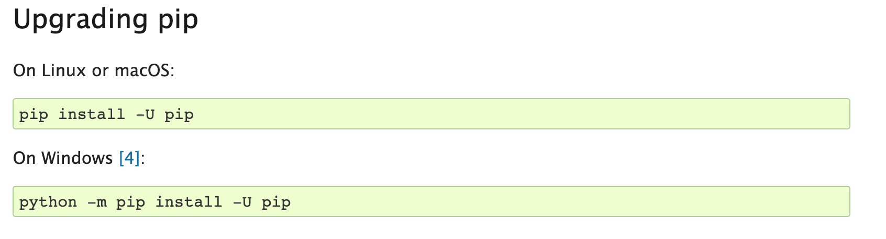
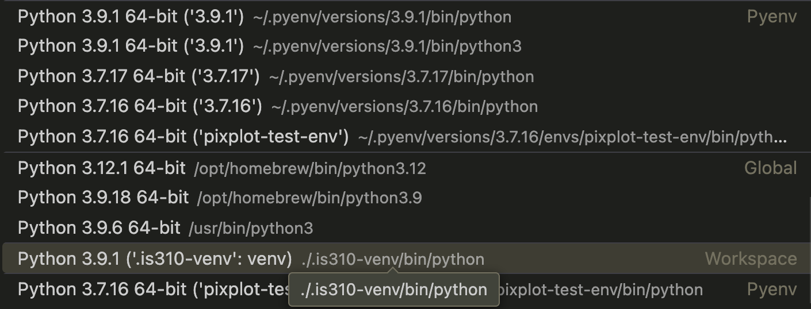
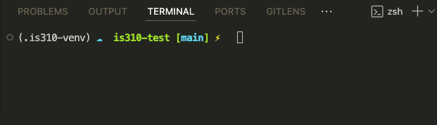
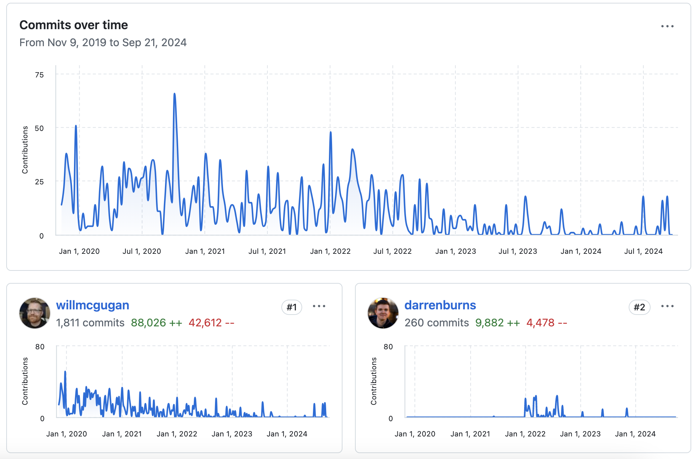
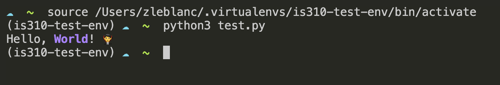

Python Virtual Environments & Packages
⚡️ If you already have experience with virtual environments and have a preferred setup, feel free to keep using what you have already though do reach out if you start having any errors or strange messages in your terminal.
What is virtual environment?
We have started exploring Python libraries that come pre-installed with Python when you set it up on your computer, but that still need to be imported so that we can use it (remember Pathlib!). Now we’re going to start installing additional libraries that don’t come pre-installed with Python. However, before we install these libraries, we need to create a virtual environment. A virtual environment is necessary to keep the libraries we install contained to each project.
The Python documentation explains that:
“Python applications will often use packages and modules that don’t come as part of the standard library. Applications will sometimes need a specific version of a library, because the application may require that a particular bug has been fixed or the application may be written using an obsolete version of the library’s interface.
This means it may not be possible for one Python installation to meet the requirements of every application. If application A needs version 1.0 of a particular module but application B needs version 2.0, then the requirements are in conflict and installing either version 1.0 or 2.0 will leave one application unable to run.
The solution for this problem is to create a virtual environment, a self-contained directory tree that contains a Python installation for a particular version of Python, plus a number of additional packages.”
You can read more here about virtual environments.
Prior to installing our virtual environment, let’s make sure that you have the latest version of pip, which stands for “Python Installs Packages.” Pip comes built-in to Python, but run this code to ensure you have the right version.

If you get any errors, you can check if you have pip installed by running the following command in your terminal:
pip3 --versionYou can also follow the steps here to check if you have pip installed https://stackoverflow.com/questions/40868345/checking-whether-the-pip-is-installed.
If you don’t have pip installed, you can install it by following the instructions here https://pip.pypa.io/en/stable/installation/.
Now we’ll use the built-in Python virtual environment, called venv, which you can read more about here https://docs.python.org/3/library/venv.html. One thing to note is that there are LOTS of different ways to setup your virtual environment (which lots of people have very strong feelings about). I like this answer from Stack Overflow for giving an overview of the differing options https://stackoverflow.com/a/65854168/7437781.
Creating Virtual Environments
Now that we have a sense of what a virtual environment is, let’s start creating one. We’ll start by creating a virtual environment in VS Code and then we’ll move to the terminal.
Creating Virtual Environments in VS Code
⚡️ This information has been adapted from https://code.visualstudio.com/docs/python/environments. I’ve also updated the lesson to focus on VS Code, though still recommend taking a look at the terminal version as well.
In VS Code, you can create a virtual environment by opening any VS Code Window and then opening the Command Palette. To access the Command Pilot on a Mac you type ⇧⌘P and on Windows you type Ctrl+Shift+P. You can also access the Command Palette by clicking on the View menu and selecting Command Palette.
Once it is open, you should type Python: Create Environment and selecting it in the menu. You’ll see two options: Venv or Conda. You can choose either, but I would recommend using Venv since it is built into Python and is the most common way to create a virtual environment.

Once you select Venv, you’ll be prompted to select the Python interpreter you want to use. You can choose the one that comes with Python, or you can select a different one if you have multiple versions of Python installed on your computer. Please make sure to not select a Python 2 interpreter, as Python 2 is no longer supported.

Once you’ve created your virtual environment, you should see it in whatever folder you’ve opened in VS Code. If you do not open a folder and try to create a virtual environment, you will get an error saying that you need a “workspace” to create a virtual environment. You can create a workspace by opening a folder in VS Code.

If you’ve successfully created your virtual environment, you should see a .venv folder in your project directory. This is where your virtual environment is stored. You’ll notice in the image above I renamed my virtual environment to is310-env. You can do this by right-clicking on the .venv folder and selecting Rename Folder. You may need to reopen your VS Code window to see the changes.
Once you do that you should see the following in your VS Code window, once you re-open your folder and also re-open the Command Palette to select the Python interpreter:

You’ll notice that VS Code organizes the virtual environments by the type of environment and also if they are globally installed. Once you select the virtual environment you want to use, you should see that it is activated in the bottom left corner of your VS Code window.

You can see that it is activated by looking at the bottom left corner of your VS Code window. If you have not activated your virtual environment, you’ll notice that the status bar will say Select Python Interpreter and if you click it you’ll be able to select the virtual environment you want to use.

Now when you go to open a new terminal in VS Code, you should see that your virtual environment is activated by the (.venv) in your terminal. You can also see that the name of your virtual environment is in the terminal prompt so in our case it would be (is310-env).

OPTIONAL Creating Virtual Environments in the Terminal
To be honest, VS Code has gotten very good at creating virtual environments and I would recommend using that method. However, if you are interested in creating a virtual environment in the terminal, you can follow the instructions below. I’m mostly including this because I still work this way, so you’ll see me doing this in class.
To create a virtual environment in the terminal, we’ll start by opening our terminal and then navigating to the directory where we want to create our virtual environment. I would recommend making the virtual environment in your project director, though another popular choice is to make a directory in your home directory to store all your virtual environments. You can do that with the commands below:
cd ~ # This will take you to your home directory
mkdir .virtualenvs # This will create a directory called .virtualenvs
cd .virtualenvs # This will take you into the .virtualenvs directoryNow that we are in the directory where we want to create our virtual environment (whether that’s is310-coding-assignments or .virtualenvs), we can create it by running the following command:
python3 -m venv is310-new-envThis doesn’t seem to do much, but if you look in your new .virtualenvs directory (or wherever you created your environment) you should see a new folder called is310-new-env. This is again a virtual environment. This command is telling Python to run the venv module and create a virtual environment called is310-env. You can name your virtual environment whatever you want, but I would recommend naming it something that is descriptive of the project you are working on. You should only create one virtual environment for this course. And generally, I would recommend creating a new virtual environment for each project you work on (so think personal projects, group projects, or other courses, etc.).
Now you need to activate our virtual environments. Activating the virtual environment just tells your computer to run Python and installed libraries from the virtual environment rather than the global environment. This might seem like unnecessary work, but as we saw in that xkcd comic, a lot of software can create conflicts over time (often called “dependency hell”). This is a way to avoid that.
To activate our virtual environment in the terminal, we need to use a command called called source and after that we need to specify the path to the activate file in our virtual environment. The path to the activate file is [LOCATION - OPTIONAL]/[NAME OF VIRTUAL ENVIRONMENT]/bin/activate. If you aren’t in the same directory as your virtual environment, you’ll have to specify the exact location of the virtual environment. If you are in the same directory as your virtual environment (so likely .virtualenvs), you can just run the following command if you’re on a Linux/Unix/MacOS system:
source is310-new-env/bin/activateOr if you are using a Windows system, you can run the following command for Command Prompt:
is310-new-env\Scripts\activateOr for PowerShell:
.\is310-new-env\Scripts\Activate.ps1If you are getting errors in PowerShell, you may need to change your execution policy. You can do this by running the following command:
Set-ExecutionPolicy -ExecutionPolicy RemoteSigned -Scope ProcessIn this example, is310-new-env is the name of the virtual environment and we are giving it the command to run the activate file. This will again change the prompt in your terminal to show the name of your virtual environment. This is how you know that your virtual environment is activated. If you are curious, you can explore the activate file in your virtual environment to see what it is doing. You can find it in the bin directory of your virtual environment.
Deactivating Virtual Environments from the Terminal
While usually you’ll want to keep your virtual environment activated while you’re working on a project, you can deactivate it by running the following command in your terminal:
deactivateThis will deactivate your virtual environment and you’ll see that the name of your virtual environment is no longer in your terminal prompt. You can also deactivate your virtual environment in VS Code by selecting New Terminal under the Terminal menu.
Adding Virtual Environments to .gitignore
Since we are using git to track our work, we don’t want to include our virtual environment in our repository. This is because the virtual environment is specific to your computer and the libraries you have installed. If someone else were to clone your repository, they wouldn’t have the same virtual environment as you. This is why we add the virtual environment to our .gitignore file. This file tells git to ignore certain files or directories when tracking changes. You can add the following line to your .gitignore file to ignore your virtual environment:
is310-env/Now when we run git status, we shouldn’t see our virtual environment in the list of files that have been changed. If you accidentally added your virtual environment to your repository, you can remove it by running the following command:
git rm -r --cached is310-envOr if you have further issues, you can request assistance from the instructors.
Installing Libraries in Virtual Environments
Now that we have our virtual environment created and activated in VS Code, we can start to try installing external Python libraries.
Today, we will try installing the Python package Rich by running the following command:
pip3 install richThis command tells pip to install the Rich library. Remember you should only run this command once your virtual environment is activated!
Return to rich, unlike Pathlib, rich isn’t built into Python, which is why we need to install it. pip is a package manager for Python that allows you to install and manage Python packages. You can read more about it here https://pip.pypa.io/en/stable/.
You’ll notice that I’m using pip3 to install the package. That is because I have multiple versions of Python installed on my computer. Usually if you have multiple versions of Python (specifically Python 2 and 3 versions) then you might need to use pip3 to install libraries. If you only have Python 3 installed on your computer, you can just use pip. You can check which version of Python you have installed by running the following command:
python --versionHowever, you’ll want to make sure that you’re running this with your virtual environment activated.
Similarly, you can test if the installation worked by starting your python interpreter with the python command and running the following code:
import rich
rich.__version__If you have multiple versions of python, you might need to do python3 instead of python. If you get an error, you can try running the following command to see if the library is installed:
pip listWhich will show you all the libraries that are installed in your virtual environment. You should see Rich in the list of installed libraries.
You can also look in your virtual environment directory and see if there is a site-packages directory. This is where all the libraries you install with pip are stored. You can see that the Rich library is installed in the site-packages directory.

Either of these options should show whether you have install Rich and the version you have installed. Going forward, you should try and install all Python libraries in your virtual environment.
Rich Python Library
Rich is Python Library built originally by Will McGugan to add rich text and beautiful formatting in the terminal. We can see from the GitHub repository https://github.com/Textualize/rich that it is a very popular library with almost 50,000 stars and used by almost 300,000 repositories on GitHub.

We can see that there is currently 256 contributors and that the project started in 2019.

We can start to get a sense of what the library can do by looking at the features listed on the GitHub repository but we can also read the documentation for the library to get a better sense of what it can do https://rich.readthedocs.io/en/stable/introduction.html.
This documentation is very detailed, but we can start with the Quickstart guidelines https://rich.readthedocs.io/en/stable/introduction.html#quick-start to get a sense of how to use the library.
From the guidelines we can see how to import the library into our Python script. In your is310-coding-assignments directory, create a new folder called python-libraries and create a new file called rich_example.py. In this file, add the following code:
from rich import print
print("Hello, [bold magenta]World[/bold magenta]!", ":vampire:")Now you can run the script by running the following command in your terminal:
python3 rich_example.py # or python3 python-libraries/rich_example.py if you are in the is310-coding-assignments directoryYou should see the following output in your terminal:
Hello, World! 🧛
Notice that the word world is in bold and magenta and that there is a vampire emoji at the end of the sentence. This is the power of the Rich library.
We can also start to format our text in different ways. For example, we can add a table to our script by adding the following code:
from rich.console import Console
from rich.table import Table
console = Console()
table = Table(title="Star Wars Movies")
table.add_column("Released", style="cyan", no_wrap=True)
table.add_column("Title", style="magenta")
table.add_column("Box Office", justify="right")
table.add_row("Dec 20, 2019", "Star Wars: The Rise of Skywalker", "$952,110,690")
table.add_row("May 25, 2018", "Solo: A Star Wars Story", "$393,151,347")
table.add_row("Dec 15, 2017", "Star Wars Ep. VIII: The Last Jedi", "$1,332,539,889")
table.add_row("Dec 16, 2016", "Rogue One: A Star Wars Story", "$1,332,439,889")
console.print(table)Now you can run the script by running the following command in your terminal:
python3 rich_example.py # or python3 python-libraries/rich_example.py if you are in the is310-coding-assignments directoryAnd you should see the following output in your terminal:

As you can likely tell, both Console and Table are classes built into the Rich library that allow us to format our text in different ways. We can see that we are able to add a title to our table, add columns, and add rows to our table. We can also see that we are able to format our text in different ways, such as changing the color of the text, justifying the text, and wrapping the text. You can read more about the Console class https://rich.readthedocs.io/en/stable/reference/console.html#rich.console.Console in the documentation.

You’ll notice this documentation is somewhat difficult to read, but it does show us the different methods and attributes that are available to us in the Console class. We can also click the small green source button to see the source code for the class https://rich.readthedocs.io/en/stable/_modules/rich/console.html#Console. While you won’t usually need to go so deep into a Python library’s code, it is helpful to know how to read it if you are getting errors or are unsure how to use a library.
We can also use Rich with some of the more advanced data structures we have been working with.In your rich_example.py file, add the following code:
from rich.console import Console
from rich.table import Table
# Create a Console instance to print formatted text
console = Console()
# Initial movie data stored in a list of dictionaries
movies = [
{
"Released": "Dec 20, 2019",
"Title": "Star Wars: The Rise of Skywalker",
"Box Office": "$952,110,690"
},
{
"Released": "May 25, 2018",
"Title": "Solo: A Star Wars Story",
"Box Office": "$393,151,347"
},
{
"Released": "Dec 15, 2017",
"Title": "Star Wars Ep. VIII: The Last Jedi",
"Box Office": "$1,332,539,889"
},
{
"Released": "Dec 16, 2016",
"Title": "Rogue One: A Star Wars Story",
"Box Office": "$1,332,439,889"
}
]
# Loop through the list of movies
for movie in movies:
console.print("\n[bold cyan]Reviewing movie information:[/bold cyan]")
for field, value in movie.items():
console.print(f"[magenta]{field}[/magenta]: {value}")Now we should see the following output in our terminal:

As you can see, we are able to loop through the list of movies and print the information for each movie in a formatted way. This is a great way to start to see how we can use the Rich library to format our text in different ways.
Homework: Command Line Data Curation
Now that we have completed:
it is time to start putting this all together.
Part 1: Building a CLI Application
For your homework, you will be creating a Python script that will allow you to manually enter data in the terminal and then saves that data to your preferred file format (whether that’s .txt, .csv, .json, etc.).
In your python-libraries folder, you should create a new file called cli_data_entry.py. In this file, you should create a Python script that does the following:
- Imports the
Richlibrary and creates aConsoleinstance, so that you can print formatted text to the terminal. - The script should then show the user some pre-created example data using
Rich. This data could be related to our movie example, such as the title of a movie, the release date, and the box office earnings. Or you can also ask the user to enter data that is related to your own interests or hobbies. Or really anything you want! You can use theTableclass to do this, or you can use theconsole.printfunction to format the text in a different way. - Now the goal is to get the user to add some additional data
To do this, you will need to use the input function to ask the user to enter the data for each field. We say in the last lesson that input() is a built-in Python method. However, rich also has an input method, which you can see in this documentation https://rich.readthedocs.io/en/stable/console.html#input. You can use either, but the idea is to have your user enter some data relevant to the topic.
Here’s an example of what this could look like:
from rich.console import Console
from rich.table import Table
console = Console()
console.print("Here is some initial data:", style="bold cyan")
table = Table(title="Star Wars Movies")
table.add_column("Released", style="cyan", no_wrap=True)
table.add_column("Title", style="magenta")
table.add_column("Box Office", justify="right")
table.add_row("Dec 20, 2019", "Star Wars: The Rise of Skywalker", "$952,110,690")
table.add_row("May 25, 2018", "Solo: A Star Wars Story", "$393,151,347")
table.add_row("Dec 15, 2017", "Star Wars Ep. VIII: The Last Jedi", "$1,332,539,889")
table.add_row("Dec 16, 2016", "Rogue One: A Star Wars Story", "$1,332,439,889")
console.print(table)
console.print("\n[bold cyan]Now I want you to enter your preferred movies:[/bold cyan]")
movie_title = input("Enter the title of the movie: ")
release_date = input("Enter the release date of the movie: ")
box_office = input("Enter the box office earnings of the movie: ")However, you’ll notice that this script doesn’t allow for multiple entries or writes the data to a file. This is where you come in! You should ensure that your script allows for multiple entries (maybe creating a for-loop or a function, though you can use whatever you think is best) and then save the data to a file.
- Once the user has entered the data, the script should print out their entry and ask the the user to confirm that the data they entered is correct. If the user confirms that the data is correct, the script should save the data to a file. If the user says the data is incorrect, the script should ask the user to re-enter the data. It is up to you to decide when to write data to a file, but you should only write the data to a file once the user has confirmed that the data is correct.
- Finally, the script should print a message to the user that the data has been saved to a file and the full path to the file, so they can locate it.
While you can create your CLI app to collect data on any topic, I would highly recommend developing one that might be useful for your final project or at least somewhat related to your group’s cultural topic. To be clear, this is simply a suggestion, but it might help you consider how best to design your CLI App if you have a clear dataset or topic in mind.
Part 2: Data Entry in the Wild
Once your script is working, it is time to post it to GitHub to our next discussion thread https://github.com/CultureAsData-UIUC/is310-spring-2026/discussions/6. I would highly encourage you to include a README.md file that explains how to use your script and what it does. You can also include any additional information you think is relevant.
Next, test a classmate’s script by entering new data (you should add at least two data points) and share the file that you generated back with them by replying to their post. Provide any feedback if the script doesn’t work or if there are improvements to be made. But please remember to be constructive and respectful in your feedback!
If you have any questions or need help, please don’t hesitate to ask in the discussion thread or reach out to the instructors via Slack. Also remember you are able to use GitHub Co-Pilot to help you with your coding assignments.